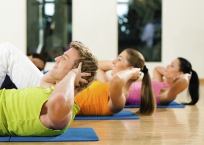

Welcome to Ejercicios de abdominales efectivos
Estos son los 3 ejercicios más efectivos para marcar los abdominales
2021.06.26 12:38Secciones
Suscribite por $90
Home Último Momento Política Economía Dólar, divisas, acciones y bonos Mercado Inmobiliario Rural Sociedad Ciudades Policiales Opinión Cartas al País Mundo Deportes Fútbol Fútbol Internacional Selección Estadísticas Ascenso Tenis Rugby NBA Hockey Agenda Deportiva Espectáculos TV Cine Series y Películas Música Teatro Cultura Revista Ñ Clima Horóscopo Loterías y Quinielas Radio Mitre en Vivo Otros Servicios Clasificados Argenprop Empleos Humor e Ilustraciones Feriados 2021 Tapas de Clarín Ediciones anteriores Gran DT Horóscopo chino Agencias Últimas noticias Edición impresa Claringrilla Sudoku Videos Fotogalerías Fama Internacional Estilo Autos Tecnología Viajes Arq Recetas Gourmet Buena Vida Familias Relaciones Astrología Suplementos Revista Viva NYT International Weekly Clarín em portugués Especiales Clarín Docs Newsletters Contactanos Ayuda Suscribite Diálogos para suscriptores TemasBuena Vida
Último Momento Política Economía Sociedad Mundo Deportes Espectáculos Rural Clasificados ClaringrillaIngresar
MI CUENTA MI SUSCRIPCION CERRAR SESIÓN
Suscribite por $90
Buena Vida
Ciudad de Buenos Aires 10° ST 11.9° Noticias de hoyDólar blue hoy
Coronavirus en Argentina
Restricciones CABA
Derrumbe en Miami
Argentinos desaparecidos en Miami
George Floyd
Vacuna Covid
Variante Delta
Elecciones 2021
Video del derrumbe en Miami
Descenso de River
Pfizer
Juntos por el Cambio
Rápidos y Furiosos 9
Euro hoy
Horóscopo
Sábado, 26 de Junio de 2021Fitness
Estos son los 3 ejercicios más efectivos para marcar los abdominales
Según coinciden los expertos, son los trabajos que mejor funcionan. De 3 a 20 meses para ver los resultados.
Para lograr los abdominales musculosos, como en todo, lo esencial es el esfuerzo y la constancia, pero también saber qué ejercicios funcionan mejor que otros.
Las más leídasde Buena Vida
1
La postura correcta para ir al baño y otros consejos
Salud
2
¿Se puede volver a congelar un alimento sacado del freezer?
Riesgos
3
Descubren que las canas que produce el estrés pueden revertirse
Nuevo estudio
4
Ayuno intermitente vs dieta clásica: qué halló un estudio que los comparó
Nutrición
5
Caen a la mitad los testeos de VIH: dónde podés hacerte la prueba
Por la pandemia
10/09/2019 14:42 Clarín.com Buena Vida Actualizado al 20/01/2020 11:32En lo primero que coinciden los que saben es que para lograr unos abdominales visibles el único camino posible es a través de la nutrición . Cuidarse en las comidas es esencial, y no sólo para lucir los músculos del estómago, sino especialmente para la salud en general, física y mental.
Ese es el primer paso. Lo que sigue, si lo que se busca es marcar los abdominales como Thor, es, desde luego, entrenar esos músculos . Y en este punto se abre un abanico de posibilidades. Existe una gran cantidad de ejercicios para laburar los abdominales. Pero hay un puñadito que son más efectivos que otros, y acá también concuerdan los expertos.
U n estudio realizado por el American Council on Exercise ( ACE ) reúne los tres mejores entrenamientos abdominales para lograr un núcleo fuerte y la tan deseada tabla de lavar.
Para lograr los abdominales musculosos, como en general, lo esencial es el esfuerzo y la constancia, pero también saber qué ejercicios funcionan mejor que otros.
1- La maniobra de bicicleta
Maniobra de bicicleta. La más efectiva de todas
Este es el entrenamiento abdominal más efectivo , según destaca el estudio.
Para hacer este ejercicios, hay que acostarse boca arriba con las piernas en el aire y llevar las rodillas hacia el pecho. Las manos deben colocarse detrás de las orejas.
Cómo encontrar una segunda oportunidad después del dolor
"Contraiga los omóplatos mientras levanta cada lado del piso y estira una pierna y gira su cuerpo. Con cada rotación, su codo debe alcanzar su pierna opuesta", detalla el estudio.
El ejercicio utiliza todos los músculos abdominales, incluido el recto abdominal, los músculos abdominales frontales.
2- La silla del capitán
La silla del capitán.
Para este entrenamiento, se requiere algún equipo de gimnasio: una silla de capitán o una silla sin asiento con respaldo y reposabrazos.
Para usar la silla del capitán, hay que deja que las piernas cuelguen hacia abajo antes de levantar las rodillas hacia el pecho.
Este ejercicio estimula tanto los abdominales como los oblicuos.
Mirá también Mirá tambiénOcho medidas para evitar ataques de migraña
3- Crunch con pelota
Crunch con pelota
Para hacer este ejercicio, "acuéstese sobre una pelota con las manos detrás de la cabeza y realice el ejercicio típico de inclinarse hacia atrás y usar los músculos centrales para luego avanzar".
Según los investigadores, aunque el ejercicio generó menos actividad en los oblicuos y los abdominales, apuntó a la ubicación con mayor precisión.
Este ejercicio es especialmente efectivo porque también requiere equilibrio, que involucra músculos abdominales más pequeños.
Mirá también Mirá tambiénChemsex: el fenómeno que crece en Europa y pone en alerta a médicos de Argentina y el mundo
Sobre el estudio
El estudio, dirigido por el Dr. Peter Francis en el Laboratorio de Biomecánica de la Universidad Estatal de San Diego, comparó 13 ejercicios abdominales populares, algunos con equipos, y los clasificó de más a menos efectivos.
Los ejercicios se clasificaron por estimulación muscular en el recto abdominal, los músculos abdominales delanteros y los oblicuos , los músculos que se extienden desde los lados de la pared abdominal.
Importante: Además de para presumir, los abdominales también son importantes, ya que es "necesaria una pared abdominal fuerte para proteger la columna vertebral y mantener la postura erguida y recta".
Por último, según incluye el estudio, para ver los resultados de los trabajos es probable que le lleve d e tres a 20 meses.
Mirá también Mirá tambiénDolor de espalda: 3 ejercicios fáciles y tips para mejorar la postura
RR
TEMAS QUE APARECEN EN ESTA NOTA
Salud Actividad FísicaComentarios
Comentar las notas de Clarín es exclusivo para suscriptores.
Suscribite para comentar
Ya tengo suscripción
Clarín
Para comentar debés activar tu cuenta haciendo clic en el e-mail que te enviamos a la casilla ¿No encontraste el e-mail? Hace clic acá y te lo volvemos a enviar.
Ya la active CancelarClarín
Para comentar nuestras notas por favor completá los siguientes datos.
Lo más leído de Política
Alerta por la variante Delta
Coronavirus: el Gobierno renueva el DNU y podrán ingresar al país solo 600 argentinos por día
Alberto FernándezPandemia
Se oficializaron las restricciones del Gobierno para controlar las fronteras
CoronavirusLa pelea más caliente
Guerra de encuestas en Provincia: tres nuevos sondeos con números muy llamativos para las PASO 2021
Elecciones 2021Pandemia
El diputado Juan Manuel López dio positivo de coronavirus y deben aislarse Sergio Massa y Máximo Kirchner
Sergio MassaPodría haber demoras en el regreso
Más de 100.000 argentinos viajaron al exterior en los últimos cuatro meses y unos 40.000 siguen afuera por turismo
Coronavirus En ArgentinaLa interna de Juntos por el Cambio
Elecciones 2021: Facundo Manes se muestra con Martín Lousteau y la UCR cierra filas para disputar el liderazgo opositor
UCRLo más leído de Espectáculos
Ojos bien abiertos
Chris O Donnell, el actor que por ser Robin lo bajaron de Titanic y hoy vende pizza
BatmanFuera de sintonía
Eric Clapton se quedó sin amigos: “Me condenaron al ostracismo”
Eric Clapton“A tomar la leeeche”
Cómo nació y creció El Capitán Piluso, la versión más tierna de Alberto Olmedo
Alberto OlmedoEstreno fantástico
La notable transformación de Ed Sheeran para su regreso al centro de la escena musical
Ed SheeranDolor en la música
Murió Rinaldo Rafanelli, bajista histórico del rock argentino
RockOtra “realidad”
Canción urgente para Nicaragua: el “himno” que Silvio Rodríguez no quiso volver a cantar en el país de Daniel Ortega
CubaLo más leído de Deportes
Día 23
A 35 años de México 86: barrabravas vs hooligans, mitos y verdades de la batalla entre hinchas en el Azteca
Mundial México 86Qué fue de tu vida
River, a 10 años del descenso: el presente de los jugadores que estuvieron en el Monumental aquel domingo negro
River PlateTendencia en Europa
Se reveló la dieta “secreta” de Cristiano Ronaldo: sin Coca Cola y con el vegetal de moda
Cristiano RonaldoMano a mano con Clarín
A 35 años de México 86: habla Ali Bennaceur, el árbitro que no vio La Mano de Dios y que disfrutó del mejor gol de la historia de los Mundiales
Mundial México 86Entrevista
River, a 10 años del descenso: “Nunca entendí por qué Pezzotta no cobró el penal de Chiqui Pérez a Caruso”
River PlateDe héroe a villano
Otro dolor de cabeza de Mercedes en la Fórmula 1: Bottas derrapó y recibió un castigo que lo deja sin chance de hacer la pole en el GP de Estiria
Valtteri BottasLo más leído de Sociedad
La pandemia
Componente 2 de la Sputnik V: crónica de una muerte anunciada hace 164 días en Rusia
Coronavirus En ArgentinaSalta
Organizó su fiesta de 15 años y fallecieron su madre y siete tíos contagiados de coronavirus
SaltaLa pandemia
Por qué Argentina compró 24 millones de dosis de Sinopharm: una vacuna aprobada para chicos
Coronavirus En ArgentinaHay 159 desaparecidos
Derrumbe en Miami: la odisea de una familia que estaba en el piso 11 y logró escapar a tiempo
MiamiSalud
Pfizer suspende la venta de un fármaco por la posible presencia de una sustancia cancerígena
PfizerEl avance de la pandemia
Tercera ola de Covid: qué dicen los expertos que hay que hacer para minimizar el “golpe Delta”
Coronavirus En ArgentinaLo más leído de Mundo
El colapso del edificio
El drama de otra familia argentina entre los desaparecidos en la tragedia de Miami
MiamiGran operativo
Los rostros detrás del derrumbe en Miami: estas son las personas que están desaparecidas
MiamiEl colapso del edificio
Las tareas de rescate en Miami marchan lentas porque hay gas acumulado y riesgo de explosiones
Michelle BacheletAtentado
Atacan a tiros el helicóptero en el que viajaba Iván Duque, presidente de Colombia
ColombiaPandemia
Escándalo: muere una chica de 18 años tras aplicarse AstraZeneca y ahora Italia reemplaza la segunda dosis con Pfizer
Unión EuropeaRepresión a disidentes
La metamorfosis de Daniel Ortega en Nicaragua: de revolucionario a dictador
Daniel OrtegaLo más leído de Policiales
Testimonio
Habló la madre del ladrón de 15 años muerto en un asalto en La Plata: “Me lo mataron y lo dejaron tirado como a un perrito”
La PlataSiete meses sin Diego
La psiquiatra Cosachov aseguró que la muerte de Diego Maradona fue “imprevisible para todos”
Diego MaradonaAtaque Mafioso
Cuadro por cuadro, el álbum del crimen de “Dolarín” Guastini, el narco financista que habló y marcó su destino
NarcotráficoDel éxito a la cárcel
La historia de Hugo y Horacio Conzi, dos hermanos unidos por la violencia y los negocios oscuros
San IsidroInseguridad
“Pará loco, pará”: mató a un ladrón de 15 años que tomó de rehén a su hijo de 7 y quiso meterse a robar en una casa
La PlataInseguridad
Crimen en la ruta 7: lo mataron con un fusil cuatro días antes de cumplir 50 años
InseguridadPiedras 1743. C.A.B.A, Argentina
Editor Responsable: Ricardo Kirschbaum
Registro de Propiedad Intelectual: 4347221
Edición Nº: 9213
25 de Junio de 2021
Suscribite por $90
AREA DIGITAL
Diario Olé + Gran Dt + Argenprop + Guía Clarín + Clasificados + Receptoria Online + Colecciones Clarín + ElleGRUPO CLARIN
Grupo Clarín + Noticias Clarín + TN + El Trece TV + Mitre + La 100 + Ciudad + Cienradios + TyCSports + La Voz del Interior + Los Andes + ViaPais + RumbosPUBLICIDAD
ANÚNCIESE CON NOSOTROS Términos y Condiciones Política de Protección de Datos Personales Normas de confidencialidad y privacidad Mapa del sitio Contáctenos Ayuda ArchivoRegistro Propiedad Intelectual: 4347221. Propietario Arte Gráfico Editorial Argentino S.A. © 1996-2021 Clarín.com - Clarín Digital - Todos los derechos reservados.
Información fiscal
